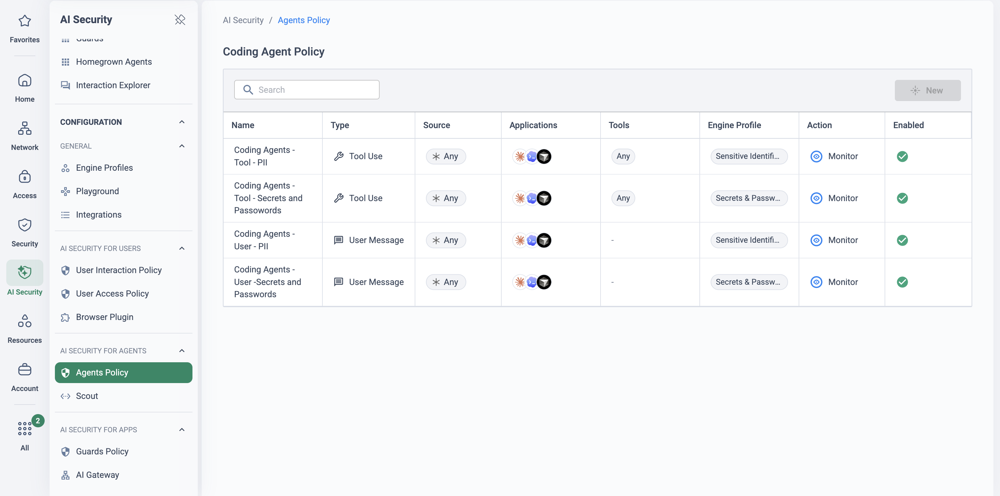

Why this matters
The GenAI conversation has moved on from chatbots. Coding agents commit code, SaaS copilot agents answer customers from CRM data, and customer-built agents chain tool calls against internal APIs — all autonomously, all with delegated credentials. A single request can trigger a sequence of actions no human reviews in the moment. Adoption is happening whether it is governed or not: developers install coding agents themselves, business teams build agents on low-code platforms, and engineering wires agent frameworks straight into production systems.
Cato classifies AI agents into three types, and the distinction drives how each is secured: local agents (typically third-party tools running on user endpoints, such as coding agents), managed agents (generally low-code or no-code agents built on cloud and SaaS platforms such as AWS Bedrock, Azure AI Foundry and Microsoft Copilot Studio) and custom agents (fully coded agents your teams build and run on endpoints or in cloud environments).
The objective: know every agent you run, see everything each one does, and govern what it is allowed to touch — without slowing the teams adopting it.
Agent sprawl, delegated permissions, machine-speed mistakes
Three problems compound each other. Sprawl — nobody has an inventory of the agents in use, their configurations or the MCP servers they connect to. Delegated identity — an agent acts with the permissions of the person who launched it: repo access, file systems, internal APIs, CRM data. Injection — an attacker who can influence what an agent reads can steer what it does next; with agents, the payload can arrive through a tool response, not just a prompt (published attacks such as EchoLeak and CurXecute targeted exactly this path against local and coding agents).
AI-specific attacks
Prompt injection, jailbreak attempts and multi-turn attacks that manipulate agent behaviour — including indirect prompt injection, where a malicious payload in a tool's output hijacks the agent's actions.
Data exfiltration
Agents with access to code repositories, internal APIs, CRM systems or file systems can leak source code, credentials, personal identifiers or financial data through tool calls or model outputs.
Shadow agents
Unmanaged agents installed without IT approval — including personal instances of coding assistants running without enterprise licences or security controls — create blind spots in security posture.
MCP server risks
Malicious or misconfigured MCP servers can expose sensitive data, execute unauthorised commands, or introduce vulnerabilities into the agent's workflow.
Compliance violations
Failure to meet regulatory requirements for AI systems, such as the EU AI Act, or internal policies governing code generation, data handling and automated decision-making.
Governance gaps
No visibility into which agents are deployed, what tools they connect to and what data they can access — making consistent security policy across the organisation impossible.
“How many AI agents are running in your environment right now — on developer laptops, in Copilot Studio, in your own code — and could you show me the last thing each one did with the permissions it was given?”
Discover, observe, govern — every agent type
AI Security for Agents gives one workflow across all three agent types: build the inventory, trace what each agent actually does, and enforce policy at the moment of action. Every interaction is evaluated at four inspection points — user prompts, model outputs, tool calls and tool messages — so an injected instruction hiding in a tool response is caught just like a malicious prompt. Detections cover prompt injection, jailbreak attempts, sensitive data exposure and policy violations, and the same Guards and policy engine protect local, managed and custom agents alike.
Complete agent inventory
Scout scans endpoints for installed agents, configurations, licence types and connected MCP servers; managed platforms are discovered via API; custom agents become visible the moment they connect through the AI-FW.
Four-point runtime inspection
Prompts, outputs, tool calls and tool messages are all inspected — catching indirect prompt injection arriving through tool responses, which chat-only controls never see.
Policy at the moment of action
Agent Policy governs what users may send to coding agents, which tools and MCPs agents may use, and what happens on a match — block or redact sensitive data and credentials in real time.
Session-level audit evidence
Every prompt, response and tool call is recorded as a session with violations tagged inline — step-by-step evidence for incident investigation, blast-radius analysis and compliance.
How each agent type is secured
Local agents endpoint
- Scout scans developer workstations (macOS, Windows, Linux) for installed AI coding tools — no TLS inspection, proxy or browser extension required; deployed as a script via MDM (Intune, Jamf, Kandji), run on a schedule.
- Agent Controls surface agent events — user messages, tool calls, tool responses, MCP interactions — for evaluation by Agent Policy.
- Discovery covers Claude Code, Cursor, Codex, Copilot, VS Code, JetBrains IDEs, Windsurf and more; agent controls today for Claude Code, Cursor and Codex.
- Runtime protection blocks or redacts sensitive tool calls and stops indirect prompt injection in tool responses before it reaches the agent.
Managed agents platform
- Cato connects via API to platforms such as AWS Bedrock, Azure AI Foundry and Microsoft Copilot Studio and auto-discovers every deployed agent.
- Inventory captures each agent's name, purpose and instructions, connected tools and connectors, knowledge bases and data sources, and assigned permissions.
- Platform tracing data — prompts, responses, tool invocations and results — streams into the Agentic AI dashboard in real time.
- Traced invocations feed the AI Firewall for the same four-point inspection; threats can be alerted, logged or blocked depending on integration and enforcement mode.
Custom agents coded
- Agents built with LangChain, the OpenAI Agents SDK or direct LLM API calls connect to the AI-FW at SDK level: redirect the LLM base URL to the AI-FW proxy endpoint and add an authentication header.
- The AI-FW sits transparently in the request path, proxying to the original provider — no changes to the agent's core logic.
- Every invocation is traced as a session: full conversation history, tool calls with parameters, tool responses and final output.
- Guards enforce protection against injection, jailbreaks and sensitive-data leakage; policies are configured centrally and applied to all connected custom agents.
Two monitoring lenses
Monitoring splits into two complementary views: Local Agents for inventory and posture (what exists, who runs it, what it can reach) and Agent Sessions for runtime behaviour (what it actually did, and whether policy intervened). A typical investigation starts in Local Agents — an agent with a suspicious MCP server configuration — then pivots to Agent Sessions to review its runtime activity.
| Question you're answering | Use this view |
|---|---|
| What agents are installed across my endpoints? | Local Agents |
| Which MCP servers are connected to my agents? | Local Agents |
| Which users are running unapproved agents? | Local Agents |
| What did this agent do during a session? | Agent Sessions |
| Did any agent trigger a violation? | Agent Sessions |
| Was sensitive data exposed through a tool call? | Agent Sessions |
How to run the demo
Ask what triggered the conversation: a developer-tools audit, a Copilot Studio rollout, an AI governance mandate, an incident? Then ask who owns agent risk today — security, platform engineering, or nobody. Anchor the demo to that answer.
-
Open with the inventory question
Whiteboard the three agent types — local, managed, custom — and ask which of the three they could inventory today. Most can answer for none. That gap is the demo's storyline: discover, observe, govern.
-
Show endpoint discovery with Scout
AI Security → Scout
Walk the Scout page: activity and identified-user widgets, OS distribution, and the installations table (Scout ID, user, hostname, inline Hooks status, first/last seen). Open Install to show the deployment story — a script pushed by MDM (Intune, Jamf, Kandji), scheduled to re-run periodically, with no TLS inspection, proxy or browser extension required.
-
Review the discovered agent estate
AI Security → Local Agents
The Agents view lists every discovered instance: application, user, tools, hostname, interceptor and last seen — including shadow instances identified from detected personal email addresses. Drill into one instance ("Priya's" laptop works well): its MCP servers, the directories it can access, and its tool list. Mark a dubious MCP tool unsanctioned — that classification feeds straight into agent policies.
-
Enable Agent Controls enforcement
AI Security → Scout → Settings
Toggle Enforcement on so Scout enforces Agent Controls on detected coding tools, and scope the enforcement policy to specific users or groups — start with the engineering pilot group; an empty policy applies to everyone.
-
Govern a coding agent centrally — Claude Code worked example
Show how a local agent's own behaviour is governed at source. For Claude Code, a
managed-settings.jsonpolicy file is uploaded in the Claude Admin Console under Advanced Configuration → Claude Custom Configuration. It takes highest precedence — users and projects cannot override it:// managed-settings.json (excerpt) { "availableModels": ["claude-sonnet-4-6"], "permissions": { "allow": ["Bash(ls:*)", "Read(/Users/*/projects/**)"], "ask": ["Bash(npm install:*)"], "deny": ["Bash(rm:*)", "Bash(curl:*)", "Write(/etc/**)"], "disableBypassPermissionsMode": true }, "sandbox": { "enabled": true, "allowedDomains": ["registry.npmjs.org", "api.github.com"], "allowWrite": ["/Users/*/projects/**"] } }
Talk through the controls: model allow-list, shell commands split into allow / ask / deny, blocked bypass mode, and OS-level sandboxing that restricts write paths and the network domains sandboxed commands may reach. Validate on a test endpoint with
claude doctorbefore rolling out. -
Investigate a live agent session
AI Security → Agent Sessions
Show the interactions-by-application and interactions-over-time widgets, then open a session with a violation tag. The Session Audit header gives the triage picture — user, hostname, model, tools used, violations. The Events timeline steps through user prompts, agent responses, tool calls and tool messages (MCP events badged), with the blocked event highlighted — perfect for narrating an indirect-injection catch: "the payload arrived in a tool message, not a prompt, and policy intervened here". Flip to Schema for the visual call graph with the blocked tool marked in red — this is the view "Marcus" in the SOC starts from.
-
Extend to managed and custom agents
AI Security → Integrations
Close the loop on the other two types: managed platforms (AWS Bedrock, Azure AI Foundry, Microsoft Copilot Studio) connect via API for discovery, tracing and AI-FW inspection; custom agents connect by redirecting their LLM base URL to the AI-FW proxy. Same Guards, same policies, same session audit — one governance model for every agent the organisation runs.
How to prove it in the customer's tenant
This is a visibility-first pilot in the newest area of the platform, and it is run to the standard frame — scope agreed, criteria written down, weekly cadence, a decision meeting booked before anything is deployed (see Running a Cato PoV). The deliverable is not a blocked attack; it is an agent inventory the customer has never had, one agent's behaviour observed end-to-end, and a governance recommendation grounded in that evidence. Where enforcement is exercised at all, it is in monitor mode, on one agreed agent, with its owner in the room.
Every capability claim below is anchored to the published overview set: AI Security for Agents and its local, managed and custom agent pages.
Solidly documented observation: Scout scans endpoints and identifies installed local agents, their configurations, licence types and connected MCP servers; managed platforms (AWS Bedrock, Azure AI Foundry, Microsoft Copilot Studio) are connected via API and every deployed agent is auto-discovered with its instructions, tools, knowledge bases and permissions; sessions are traced as prompts, model responses, tool invocations and results. Note the mechanisms honestly: local-agent discovery is endpoint scanning and managed discovery is platform APIs — this inventory is not derived from network traffic.
Documented at overview level only: enforcement. The KB states the AI Firewall can alert, log or block traced managed/custom agent interactions, and that runtime policies cover all four inspection points for local agents — but detailed policy-configuration articles are not yet public, and several deep-dive pages have already moved or been renamed. This area moves fast: date every claim and every screenshot, and re-verify capability statements the week you present them, not the week you scoped the PoV.
Success criteria — agreed before anything is deployed
| Success criterion | What is demonstrated | Priority | Evidence artefact | Where in the CMA |
|---|---|---|---|---|
| 1 · Local-agent inventory delivered | Scout deployed to the agreed pilot endpoint group; discovered agents listed with configurations, licence types and connected MCP servers | Must prove | Dated inventory capture in the evidence doc | AI Security → Local Agents |
| 2 · Managed-agent estate discovered | One platform (Bedrock, AI Foundry or Copilot Studio) connected by API; deployed agents auto-discovered with instructions, tools, knowledge bases and permissions | Should prove — only if the customer runs one | Dated inventory capture | AI Security → Managed Agents |
| 3 · One agent observed end-to-end | For one agreed agent, a full session traced: prompts, model responses, tool calls with parameters, tool results | Must prove | Dated session record, walked through with the agent's owner | AI Security → Agent Sessions |
| 4 · One control exercised in monitor mode | A policy applied to the agreed agent with the action set to alert or log — nothing blocked | Should prove — see the note below | Alert/log event tied to an agreed test interaction | AI Security → Agents Policy |
| 5 · Exposure review & recommendation | An evidence-led review of which agents can touch which code, data and systems — closed with a written governance recommendation | Must prove | One-page recommendation plus the criteria register | Evidence doc (built from criteria 1–4) |
Be honest about criterion 4 at the workshop. The alert/log/block choice is documented for managed and custom agents via the AI Firewall; for local agents the KB documents blocking and redaction but not a distinct monitor mode. If the tenant or licence does not expose a monitor-mode control during the PoV window, the agreed fallback — in writing, on day one — is that the pilot succeeds on inventory plus observation (criteria 1, 3 and 5), and enforcement moves to the next-steps register. That honesty is what makes the rest of the evidence credible.
- Licensing in writing. The public KB pages verified for this runbook do not state licence terms for AI Security for Agents (the end-user capability is a separate per-user licence) — confirm entitlement and trial scope with the Cato account team before the workshop, and record it in the register.
- An MDM route for Scout to the pilot endpoint group — typically one engineering team's laptops. Agree the group and its owner up front.
- Platform API credentials for criterion 2, with enough permission to enumerate deployed agents in the chosen environment.
- A named owner per agent. Attribution is a deliverable, not an afterthought — every discovered instance gets an owner in week 1, and the "one agreed agent" for criteria 3–4 has its owner in the weekly sync.
- TLS inspection is not the gate here. Unlike prompt-level end-user inspection (where TLSi is staged first — see TLS Inspection: Staged Rollout Playbook), local-agent discovery is endpoint-based and managed discovery is API-based, so this pilot is not blocked on a TLSi rollout.
Walkthrough — five weeks, monitor-first throughout
-
Run the scoping workshop
Pick the pilot endpoint group, the one managed platform (if any), and the one agreed agent for end-to-end observation — a coding agent on a developer's laptop or one Copilot Studio agent both work well. Agree what counts as sensitive exposure for criterion 5 (source repositories? customer data? production APIs?), write the criteria table above into the register, and book the weekly sync and the wrap-up meeting.
-
Deploy Scout to the pilot group
AI Security → Local Agents
Push Scout to the agreed endpoints via the customer's MDM and let discovery run. Evidence lands in Local Agents: each discovered instance with its configuration, licence type and connected MCP servers. Capture the first inventory the day it populates — dated — and again at the end; the delta (new agents appearing mid-pilot) is often the finding that lands hardest. Nothing is enforced at this stage.
-
Connect the managed platform
AI Security → Integrations
If criterion 2 is in scope, connect the chosen platform by API. The KB documents auto-discovery of every deployed agent with its name, purpose and instructions, connected tools and connectors, knowledge bases and data sources, and assigned permissions — review the result in Managed Agents with the platform owner and capture it for the register.
-
Optional stretch — route one custom agent through the AI-FW
If the customer builds agents in-house and a developer owner volunteers a non-production agent, the documented pattern is to redirect the agent's LLM base URL to the AI-FW proxy endpoint and add an authentication header — the AI-FW proxies on to the original provider with no change to the agent's logic:
# Illustrative shape only — take the endpoint and key from AI Security → Integrations client = OpenAI( base_url="https://<ai-fw-proxy-endpoint>/v1", default_headers={"Authorization": "Bearer <ai-fw-key>"} )
Keep this out of the success criteria unless the customer insists — it is a strong expansion signal, not a pilot gate.
-
Observe the agreed agent end-to-end
AI Security → Agent Sessions
With the agent's owner ("Priya", if it is her coding agent), review real sessions: the prompts that went in, the model's responses, each tool call with its parameters, and the tool results that came back. Walk one complete session in the weekly sync and ask the owner to narrate what the agent was doing — the moment a session trace matches (or contradicts) the owner's mental model of their own agent is the pilot's most persuasive minute. Capture the session, dated, for criterion 3.
-
Apply one control in monitor mode
AI Security → Agents Policy
Scope a single policy to the agreed agent only, action set to alert or log — the modes the KB documents for AI-Firewall evaluation of traced interactions. Then generate an agreed, benign test interaction with the owner rather than waiting for traffic. One attributed alert against one known interaction is the whole criterion; resist any request to "just try block mode" — that belongs on the next-steps register.
-
Hold the exposure review and deliver the recommendation
Close with the conversation the evidence was collected for: which agents touch what. Per agent — owner, licence type, the MCP servers and tools it connects to, and (for managed agents) the knowledge bases and permissions it holds. Deliver a one-page recommendation: the sanctioned agent list, the ownership register, shadow instances to regularise, and a monitor-to-enforce roadmap with the honest caveat of what was observed versus controlled during the pilot.
What good output looks like


Troubleshooting — what actually goes wrong
A known agent is missing from Local Agents
Scout never reached that endpoint or has not re-scanned. Check the MDM deployment status for the device, confirm it is in the pilot group, and check the instance's last-seen timestamp after the next scan cycle before concluding anything about the product.
Managed agents not appearing after integration
The API credential can connect but cannot enumerate — wrong project, environment or permission scope on the platform side. Re-check the integration's credentials against the platform's requirements with the platform owner, then re-sync.
Custom-agent sessions never arrive
The agent's traffic is not crossing the AI-FW: the base-URL redirect was applied in the repo but not in the running environment (an environment variable overrides it, or a sidecar bypasses it). Verify the deployed configuration, not the source code.
Inventory without owners
A hostname is not an owner, and criterion 5 fails without attribution. Map every discovered instance to a named person in week 1 while the list is short. Personal or free-tier instances are flagged, not shamed — the shadow-agent finding is a pilot deliverable, not a disciplinary file.
The monitor-mode policy shows nothing
A quiet agent or a mis-scoped rule looks identical to a broken one. Do not wait for organic traffic: generate the agreed benign test interaction with the owner, then check the scope of the rule before checking anything else.
Agent evidence muddled with end-user evidence
The same person's ChatGPT browsing and their coding agent's sessions are different surfaces with different views. Keep agent criteria evidenced from Local Agents / Agent Sessions and user-prompt findings in the end-user views — or the register (and the wrap-up) blurs two different stories.
Gotchas & exit
- Licence honesty: the KB pages verified for this runbook (July 2026) publish no licence terms for AI Security for Agents. Present entitlement as whatever the account team confirmed in writing — nothing more.
- Currency honesty: this product area is moving quickly and deep-dive documentation is still landing; every claim in the wrap-up deck carries a date, and anything older than the pilot itself gets re-verified before the decision meeting.
- Capability honesty: the wrap-up states plainly what was observed (inventory, sessions) versus controlled (one monitor-mode alert, if achieved) — the criteria register enforces this framing by construction.
- Clean exit: disable and delete the monitor-mode Agents Policy rule, disconnect the platform API integration, uninstall Scout from the pilot endpoints via the same MDM route, and revert any custom-agent base-URL change. The inventory export, session evidence and governance recommendation are the customer's to keep — the deliverable outlives the configuration.